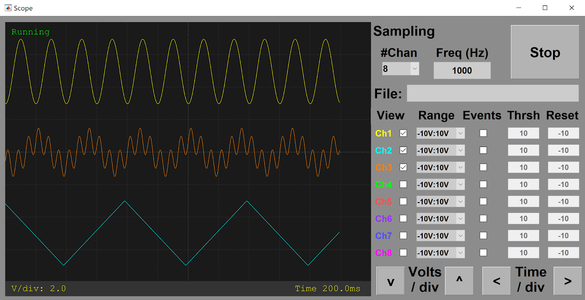

AnalogInputModule()
Description
The BpodAnalogIn class provides an object representing Bpod's Analog Input Module (a general purpose voltage ADC with a dedicated microcontroller).
The Analog Input Module has 8 input channels with 12 bits of resolution and configurable ranges up to +/-10V.
The object has functions to:
- Acquire data to a microSD card, on trigger from the Bpod state machine
- Return acquired data to MATLAB via USB
- Stream live analog input data to USB for online viewing and data capture
- Stream live data to a Bpod output module (DDS or Analog Output).
- Set voltage thresholds to generate discrete behavior events, which can be handled by the state machine
After running Bpod, an BpodAnalogIn object is initialized with the following syntax:
Where COM3 is the analog input module's serial port.
The Analog Input device is controlled in 2 ways:
- Setting the BpodWavePlayer object's fields
- Calling the BpodWavePlayer object's functions
Object fields
- Port
- ArCOM Serial port object
- SamplingRate (Hz)
- 1Hz-20kHz, affects all channels.
- Other functions (streaming to USB, streaming to external module, running threshold logic) can be used in combination, but will reduce the maximum sampling rate.
- InputRange (String)
- A cell array of strings specifying voltage input range for EACH channel:- '-10V:10V' - '-5V:5V' - '-2.5V:2.5V' - '0V:10V'
- For best signal quality, use the smallest voltage range necessary for your application.
- Signals that exceed the maximum or minimum will be constrained to the range boundary
- nActiveChannels (positive integer)
- Number of channels actively sampled (consecutive, beginning with Ch1).- Fewer channels = faster sampling possible. Read the fewest channels necessary for your application.
- Thresholds (V)
- A simple voltage threshold and reset scheme is supported by the standard firmware, to generate discrete events
- Thresholds is a 1 x nChannels vector of voltages.
- If events are enabled (see startReportingEvents() below), on voltage threshold crossing, the channel# is sent to the state machine.
- A low->high crossing will trigger the event, if ResetVoltage (below) is less than threshold.
- A high->low crossing will trigger the event, if ResetVoltage is greater than threshold.
- After a channel's voltage crosses threshold, event generation is disabled until the channel voltage crosses ResetVoltage (below)
- ResetVoltages (V)
- A 1 x nChannels vector of voltages
- Event generation is re-enabled after the voltage crosses ResetVoltages(chan).
- If a channel's ResetVoltage is below Threshold, events are triggered on low -> high threshold crossing.
- If a channel's ResetVoltage is above Threshold, events are triggered on high -> low threshold crossing.
- SMeventsEnabled (logical vector of length nChannels)
- Indicates whether each channel's threshold crossing events are sent to the state machine
- To enable or disable event transmission for the channels selected in SMeventsEnabled:
- Call startEventReporting() to enable events (below)
- Call stopEventReporting() to disable events (below)
- Channels greater than nActiveChannels (above) are ignored.
- Stream2Module (logical vector of length nChannels)
- Indicates whether each channel's measurements are sent to a connected output module
- Channels greater than nActiveChannels (above) are ignored.
- nSamplesToLog (positive integer)
- Determines the maximum number of samples to log to the microSD card after logging is started with startLogging()
- Fewer samples can be acquired, if a stop command arrives while logging.
- Set nSamplesToLog to 'Inf' to log until a stop command arrives
Object functions
- startLogging()
- Starts logging all samples acquired to the microSD card, overwriting any previously stored data
- Channels between 1 and nActiveChannels (above) are logged.
- After logging, acquired data is retrieved with getData() below.
- stopLogging()
- Stops logging samples to the microSD card.
- Data = getData()
- Returns a struct containing data logged to the microSD card since the last call to startLogging()
- Stops logging, if logging was enabled
- Fields of the data struct are:
- X: 1 x nSamples vector containing time of each sample from logging start (in seconds)
- Y: nActiveChannels x nSamples matrix, containing voltages measured at each time in X
- startModuleStream()
- Starts streaming data to the "output stream" module connector
- For each sample, the data stream output is:
- Character 'R' (byte 82)
- one 2-byte sample for each channel up to nActiveChannels
- Example firmware for the analog output module expects data in this format, and converts it into a voltage signal output.
- stopModuleStream()
- Stops streaming data to the "output stream" module connector
- startUSBStream()
- Starts streaming data to the USB serial object (obj.Port).
- Data is in the same format used for streaming to modules (see startModuleStream() above)
- Following startUSBStream, a sample can be read from the port with:
- obj.Port.read(1, 'uint8') % This will return 'R'
- obj.Port.read(nActiveChannels, 'uint16') % This will return 1 sample (in bits) for each active channel
- Other commands to the module will FAIL while USB streaming. Stop the stream with stopUSBStream().
- stopUSBStream()
- Stops streaming data to the USB port
- startReportingEvents()
- Starts sending bytes to the state machine to report threshold crossing events.
- Bytes sent indicate the channel of the threshold crossing event (i.e. byte 7 = a threshold crossing on Channel 7)
- Only channels chosen in SMeventsEnabled (above) send events.
- The conditions for triggering events are controlled by 2 fields: Thresholds and ResetVoltages (above).
- stopReportingEvents()
- Stops sending threshold crossing events to the state machine.
- setZero()
- This function is used to compensate for the ADC's zero-code offset, by shifting the ranges so that the ground potential reads as 0V.
- IMPORTANT: Connect a wire between channel 1's + and - terminals before running setZero.
- The offset will be saved to the microSD card and loaded automatically on boot.
- scope()
- Launches an oscilloscope-style GUI for troubleshooting, threshold configuration and online monitoring.

- By entering a filename in the 'File' field (including the full path) The scope() GUI can continuously capture streaming data to a file during a behavior session, as an alternative to microSD acquisition. See example protocol here.
Cleanup
-
Clear the BpodAnalogIn object with clear:
-
Clearing the object releases the serial port, so other applications can access it.
- If a BpodAnalogIn object is created inside a MATLAB function, the object is cleared automatically when the function returns.